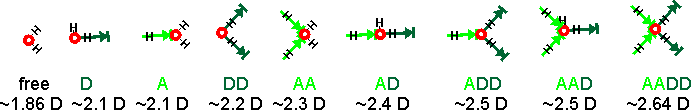
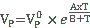

Great Barrier Reef
Water absorbs over a wide range of electromagnetic radiation with rotational transitions and intermolecular vibrations responsible for absorption in the microwave (≈ 1 mm - 10 cm wavelength) and far-infrared (≈ 10 µm - 1 mm), intramolecular vibrational transitions in the infrared (≈ 1 µ- 10 µ) and electronic transitions occurring in the ultraviolet region (< 200 nm).
 Absorption spectra of ice, snow, and clouds
Absorption spectra of ice, snow, and clouds
 Absorption spectra of gaseous, liquid, and solid water
Absorption spectra of gaseous, liquid, and solid water
 The vibrational spectra of liquid water
The vibrational spectra of liquid water
 The visible and UV spectra of liquid water
The visible and UV spectra of liquid water
 The spectrum of the Zundel cation
The spectrum of the Zundel cation
 Absorption and penetration
Absorption and penetration
 Humidity
Humidity
Water in the atmosphere is key to our climate and weather; with changes in the gaseous water (humidity), liquid water (clouds, rain, fog), and solid water (snow, ice, or hail), all of importance to everyday life. Water molecules last about nine days in the atmosphere. Water cannot condense in the atmosphere unless humid streams are mixed with cold air [3955]. Such condensed water is of the order of 1% of the total mass of atmospheric water. The condensation releases a large amount of heatt, which heats the surrounding air according to its heat capacity and affects the circulation of the atmosphere, especially in the tropics [3976].
The saturation vapor pressure (vp) of water k varies as,
the Clausius–Clapeyron equation
where L is the enthalpy of vaporization, T is the temperature (K), and R is the specific gas constant. If the actual vapor pressure exceeds this saturation value, then the excess water vapor usually quickly condenses.
Water is both the main absorber of the incoming sunlight in the atmosphere and the major greenhouse gas. Without atmospheric water, the Earth would be in a permanent ice age. The 13 trillion tons of water in the atmosphere (≈ 0.33% by weight; compare CO2 ≈ 0.04% ) is responsible for about 70% of all atmospheric absorption of radiation, mainly in the infrared region where water shows strong absorption. The average relative humidity k of the atmosphere [2474] is about 75% at ground level, reducing to about 45% at 5000 m. See also, water and global warming.
The maximum water vapor in the atmosphere

Earth's humidity, March 2015
The water absorption spectrum is very complex. Water's vapor spectroscopy (including microwave [3176] and terahertz [3566] ) has been reported [348a] and reviewed [348b]. The water molecule may vibrate in several ways. In the gas state, the vibrations [607] involve combinations of symmetric stretch (v1), asymmetric stretch (v3), and bending (v2) of the covalent bonds with absorption intensity (H216O) v1;v2;v3 = 0.07;1.47;1.00 [8]. As shown right, there are significant isotope effects with the frequencies in H2O being higher than those in D2O and T2O; the ratios between H2O, D2O, and T2O being approximately the square root of the D:H or T:H atomic mass ratios. The stretch vibrations of HDO refer to the single bond vibrations, not the combined movements of both bonds. Gas-phase rotations [1701] are complex and are combined with these vibrations. The lowest ortho-para transitions are given elsewhere.
Gas |
v1,
cm−1 |
v2,
cm−1 |
v3,
cm−1 |
|---|---|---|---|
H216O |
3657.1 |
1594.7 |
3755.9 |
H217O |
3653.1 |
1591.3 |
3748.3 |
H218O |
3649.7 |
1588.3 |
3741.6 |
HD16O |
2723.7 |
1403.5 |
3707.5 |
| HD17O | (2716.0)* | 1399.7 |
(3701.5)* |
| HD18O | 2709.3 |
1396.3 |
3696.3 |
D216O |
2671.6 |
1178.4 |
2787.7 |
| D217O | (2665.8)* | 1174.0 |
(2772.3)* |
| D218O | 2660.8 |
1170.2 |
2767.5 |
HT16O |
2299.8 |
1332.5 |
3716.6 |
T216O |
2237.2 |
995.4 |
2366.6 |
* estimated
There is also a weak broadband absorption continuum that roughly follows the vibrational bands. This is due to the interactions of the water molecules with each other and other atmospheric atoms and molecules [3526].
[Back to Top  ]
]
Ice, snow, and clouds in Antarctica
The electromagnetic interactions with ice, snow, and clouds are determined by the refractive index and absorption coefficient of pure ice plus the reflectance, absorbance, and transmittance effects of grain size (for snow), bubbles (for glacier and lake ices), brine inclusions (for sea ice) and impurities (for clouds) [3580]. Clouds contain smaller ice crystals than snow plus dust and soot. The spectrum of ice resembles (but is not identical to) that of water (see below) except in the far-infrared, microwave, and radio-wave regions (particularly <~20 cm−1). The grain size of snow determines its reflectance, with larger crystals showing poorer reflectance (poorer aldebo) and greater absorbance. Ice is blue (like liquid water, see below), but snow is white. Snow and ice are transparent to radio waves, with radar able to determine ice-sheet thickness. Ordinary ice is birefringent [3580].
[Back to Top  ]
]
Water vibration modes
Shown opposite are the main vibrations occurring in liquid water. Rotations in the liquid phase are totally dominated by hydrogen-bonding. The movements are animated using the cursor. The dipole moments change in the direction of the movement of the oxygen atoms as shown by the arrows. As the H-atoms are light, the vibrations have large amplitudes that have been exaggerated in the cartoon.
The water molecule has a very small moment of inertia on rotation giving rise to rich combined vibrational-rotational spectra in the vapor containing tens of thousands to millions of absorption lines [3184]. In the liquid, rotations tend to be restricted by hydrogen bonds, giving the librations. Also, spectral lines are broader, causing overlap of many of the absorption peaks.
Absorbance of gaseous, liquid, and solid water;
mouse over for LDL and HDL
Shown left is a comparison of the gas, liquid, and solid spectra of the same amount of H2O [1392]. Mouse over the Figure to show the high (HDL) and low (LDL) density liquid water forms [1738].i The main stretching band in liquid water is shifted to a lower frequency (v3, 3490 cm−1, and v1, 3280 cm−1 [8]), and the bending frequency increases (v2, 1644 cm−1 [942]) by hydrogen-bonding. As seen, increased strength of hydrogen-bonding typically shifts the stretch vibration to lower frequencies (red-shift) with significantly increased intensity in the infrared (but not Raman) due to the increased dipoles. Blue-shifting hydrogen bonds are described elsewhere.
[Back to Top  ]
]
Vibration(s)
[942] |
liquid H2O
(25 °C) |
liquid D2O
(25 °C) |
liquid T2O [1848] | ||
|---|---|---|---|---|---|
v,
cm−1 |
ελ, M−1 ˣ cm−1 c |
v,
cm−1 |
ελ,
M−1 ˣ cm−1 |
v,
cm−1 |
|
| v2 | 1643.5 |
21.65 |
1209.4 |
17.10 |
1024 |
| combination of v2+ libration | 2127.5 |
3.46 |
1555.0 |
1.88 |
|
| v1, v3, and overtone of v2 | 3404.0 d |
100.61 |
2504.0 |
69.68 |
2200 |
Comparative spectra of H2O, D2O, and HOD
HDO (50 mole % H2O plus 50 mole % D2O; ≈ 50% HDO, ≈ 25% H2O, ≈ 25% D2O) has maxima at 3415 cm−1, 2495 cm−1 1850 cm−1, and 1450 cm−1 assigned to OH stretch, OD stretch, g combination of v2+ libration and HDO bending respectively [786] (see right for comparative spectra). HTO and DTO (50 mole % mixtures as HDO above) have v2 bend maxima at 1388 cm−1 and 1130 cm−1, respectively [1848]. The Raman spectra of the vibrational peaks have been determined for H2O, D2O, and isotopic mixtures, at temperatures from 303 to 573 K [3018]. The Raman spectrum of a water sample can be used to determine the content of heavy water (D2O) in a water sample [4362]. All the vibrational bands in liquid water are made up from contributions of different components from water molecules in different hydrogen-bonded environments (see, for example, hydrogen bonds); lower frequency components are attributed to water molecules with stronger hydrogen bonds and higher frequency components have weaker hydrogen bonds [2157].
Variations in the environment around each liquid water molecule give rise to considerable line broadening with vibration shifts in a hydrogen-bond-donating water molecule being greater than in a hydrogen-bond accepting molecule but both acting in the same direction [679], and accumulating with the number of hydrogen bonds. The strength of the hydrogen bonding depends on the cooperative/anti-cooperative nature of the surrounding hydrogen bonds with the strongest hydrogen bonds giving the lowest vibrational frequencies [852]. Stretching frequency increases about 360 (at 3.1 Å) -1000 (at 2.6 Å) cm−1Å−1 with increasing O····O distance and about 9 cm−1 degree−1 with increasing O-H····O bend [446]. The absorption intensity of these bands is v1;v2;v3 = 0.87;0.33;1.00 [8]. In supercooled water, the spectral peaks are shifted to lower frequencies with a 70 cm−1 shift of the stretch frequency and 30% increase in its intensity between 298 K and 238 K [1065]. Ultimately a stretch peak at 3120 cm−1 dominates, as it also does in amorphous ice ( LDA) [1252]. In hexagonal ice, these bands are shifted further (v1, 3085 cm−1, v2, 1650 cm−1,v3, 3220 cm−1).
Raman spectra of the O-H stretch band,
The O-H stretch band around 3400 cm−1 is often broken down into a few Gaussian peaks corresponding to hydrogen-bonded water molecules with different donor (D) and acceptor (A) hydrogen bonds. At 295 K and 0.1 MPa, the Raman spectra of H2O and D2O have often been deconvoluted into five sub-bands (see the Raman spectra left, from [2830]. Note that the outline curve (red) has been considerably smoothed. There are substantial residuals that vary with the wavenumber. This analysis requires a very large number (fifteen) of fitted parameters. The five sub-bands are located at 3043, 3225, 3432, 3575, 3638 cm−1 (H2O), or 2265, 2382, 2503, 2590, 2666 cm−1 (D2O), which are assigned to OH (OD) vibrations engaged in DAA-OH, DDAA-OH, DA-OH, and DDA-OH hydrogen-bonding, and free vibrations [1980, 2894]. The fitted parameters, assignations, and residuals vary between researchers and even between works by the same author, so they should not be thought of as exact. It can be seen that the two significant vibrations are assigned to the doubly donor-acceptor or singly donor-acceptor water molecules. Other workers assign different Gaussian peaks to different causative structures [2972] (for a more extensive discussion, see Methods)).
The assignments given above right have been developed over time. Assignment of any peak to the free H2O is not probable as there is little support for the presence of free molecules in liquid water at ambient temperatures. However, there may be singly linked H2O molecules. There are many more structural possibilities that should also be included if they are present. The spectra must be associated with water's dipole moment (through their polarization), and the induced dipole moments are generated by their interaction with all the surrounding water molecules. The calculated dipole moments of water molecules with their immediate neighbors are shown below[3597] (A = oxygen acceptor hydrogen bond, D = hydrogen donor hydrogen bond). The actual dipole moments depend on the total of all surrounding water molecules, but this indicates the increase in dipole moment with the increase in hydrogen bonding and between seven and nine groups. The free and singly-linked H2O would give Raman signals with the greatest wavenumber and the AADD-OH structure at the lowest wavenumber.
Calculated dipole moments of water molecules with their immediate neighbors [3597]

Further Raman spectra have been obtained simultaneously from the liquid and vapor phases of pure water trapped at the critical density (322 kg.m−3) within synthetic inclusions in quartz heated up to the critical temperature (373.946 °C) [3637]. The Raman spectra of ice Ih (H2O and HDO) in the temperatures range from 253 to 83 K have also been determined [3641]. Heavy water has also been examined and compared [2972]. D2O shows the prominent presence of the v2 overtone peak that is much weaker in the H2O spectrum.
In liquid water, the molecular stretch vibrations shift to higher frequencies, on raising the temperature (as hydrogen-bonding weakens, the covalent O-H bonds strengthen causing them to vibrate at higher frequencies), whereas the intermolecular vibrations shift to lower frequencies and the molecular bend vibration peak shifts to lower frequencies and becomes both narrower [696] and stronger. These differences between stretch and bend vibrations are due to the increased importance of intermolecular hydrogen-bonding at lower temperatures that tend to reduce intermolecular bending while encouraging stretching. Thus in the extreme non-hydrogen-bonded state, the 'dangling' O-H bond stretch frequency at surfaces where the water molecule has three hydrogen bonds (two accepting and one donating) is at 3697 cm−1 [1246]. Raising the temperature also lowers the intensity of the stretching bands and this divergent behavior of bending and stretching vibrations allows their contributions to combination bands to be discerned. Thus, combinations of stretching vibrations shift to higher frequencies with temperature, with this trend reducing when bending vibrations are also combined. For example, the first overtone combination of symmetric and asymmetric stretching shows a shift from strongly hydrogen-bonded structures (6707 cm−1) to weakly hydrogen-bonded structures (7082 cm−1) with increasing temperature [237], and the combination band at about 5200 cm−1 shifts to slightly higher wavenumbers with reduced hydrogen bond strength [282]. The second overtone of the stretching band gives rise to a significant peak in the near-infrared spectrum (λ 970 nm).
ATR absorption spectra, from [1738]
Attenuated total reflectance (ATR) infrared spectroscopy, shows isosbestic points for both ordinary and heavy liquid water, with respect to temperature. For H2O these are at around 600, 1600, 1680 and 3550 cm−1 [1738] (171, 221, 669 and 3535 cm−1 [2254]; 3475 cm−1 [2972]), in agreement with earlier work [530, 699]. a Shown opposite are the ATR spectra of liquid water at -4 °C (blue solid line; 61% LD, 39% HD) and 80 °C (red solid line; 31% LD, 69% HD) and those of the low-density (LD, blue dashed line) and high-density (HD; red dashed line) forms that make up the liquid water [1738] in a linear combination. Similar conclusions have been gained from Raman spectroscopy [3356] where the LD peak is analyzed as tetrahedral fully-hydrogen-bonded H2O molecules, and the HD peak analyzed as molecules with single acceptor and donor hydrogen bonds [1980]. Also, similar conclusions (at different wavenumbers) are drawn for D2O [1738]. A more detailed analysis of the O-H stretch band of H2O and D2O with temperature has been completed [2972]; when no free hydroxyl groups were found. FTIR spectra of pure water have been analyzed from -30 °C to +44°C. It showed multiple small water clusters [3281]. Unsurprisingly, such changes in absorption with temperature extend into the near-infrared and visible spectrum [1974]. These conclusions are in qualitative agreement with wide-angle X-ray diffraction measurements [1755] and supportive of progressively changing two-phase models such as described here.
Increasing the pressure on water decreases the O····O distances (graphed elsewhere) so increasing the covalent O-H distances and lowering their stretch frequency [804]. Raised pressure also causes a reduction in long, weak, or broken bonds and an increase in bent and short, strong hydrogen bonds [804].
The overtone bands of water (≈ 1100 nm - 2500 nm, in a scientific discipline known as AquaPhotomics [3642]) have been shown to be good discriminatory and non-destructive indicators of changes in aqueous structuring in disease diagnosis and protein conformation and have aided the understanding of the role of water in biological systems [1615a]. A database of such interactions is being built up [1615b], with comparisons being made using polar graphs (Aquagrams) [1615c].
The spectra for isotopic variants of water (for example, HDO, D2O, and H218O) are all different; in particular, the H-O (≈ 3400 cm−1) and D-O (≈ 2500 cm−1) stretching vibrations are not connected in HDO, but the related vibrations in H2O and D2O involve both hydrogen atoms.
Wavelength |
cm−1 |
Assignment |
Wavelength** |
cm−1 |
Assignment |
|
|---|---|---|---|---|---|---|
| 0.2 mm | 50 | hydrogen bond bend | 1200 nm | 8330 | av1 + v2 + bv3; a + b = 2 | |
| 55 μm | 183.4 | hydrogen bond stretch | 970 nm | 10310 | av1 + bv3; a + b = 3 | |
| 25 μm | 395.5 | L1, librations | 836 nm | 11960 | av1 + v2 + bv3; a + b = 3 | |
| 15 μm | 686.3 | L2, librations | 739 nm | 13530 | av1 + bv3; a + b = 4 | |
| 6.08 μm | 1645 | v2, bend | 660 nm | 15150 | av1 + v2 + bv3; a + b = 4 | |
| 4.65 μm | 2150 | v2 + L2 | 606 nm | 16500 | av1 + bv3; a + b = 5 [526] | |
| 3.05 μm | 3277 | v1, symmetric stretch | 514 nm | 19460 | av1 + bv3; a + b = 6 [526] | |
| 2.87 μm | 3490 | v3, asymmetric stretch | 449 nm | 22270 | av1 + bv3; a + b = 7 [1937] | |
| 1900 nm | 5260 | av1 + v2 + bv3; a + b = 1 | 401 nm | 24940 | av1 + bv3; a + b = 8 [1937] | |
| 1470 nm | 6800 | av1 + bv3; a + b = 2 | Note that a and b
are integers, ≥ 0 |
|||
* Raman peaks are given in [805].
**Wavelength (nm) = 107/wavenumber (cm−1)
(nm ≈ 3.3 attosecond); 1 cm−1 ≈ 0.03 THz
The near-infrared (NIR) bands (at about λ 970-1940 nm) are suited to rapid non-destructive water determination
[479], all shifting
a few nm to longer wavelength (lower frequency) with strengthening
hydrogen-bonding due to shifts from high-density water (that is, increasing CS) to low-density water (that is, increasing ES) [489]. A
shoulder at about 3250 cm−1 on the side of the
only strongly active Raman peak, and described in
the IR spectrum at 3220 cm−1 [699],
(symmetric O-H stretch, v1) of liquid
water had been assigned to the collective in-phase symmetric
O-H vibrations of strongly tetrahedrally-bonded water patches but has been assigned to (at ~3250 cm−1)
intramolecular coupling resulting in Fermi resonances due to the mixing between HOH-bend overtones and OH-stretch fundamentals [3517]. The ratio of this to the remaining peak at about 3400 cm−1 has been used to determine the fraction of such water. However,
such comparisons, although commonly used, should be treated
with caution, as their absorbencies are unlikely to be identical
and other possible vibrations, such as the first bend (v2)
overtone, will interfere. This remaining peak has been analyzed
in many ways (for example, zero, single, double and triple
coordinated hydrogen-bonded water) but most convincingly in
terms of three-coordinate (double acceptor single donor, 3400
cm−1; single acceptor double donor, 3535 cm−1)
and two-coordinate (single acceptor single donor, 3630 cm−1)
hydrogen-bonded water molecules [699].
There is much structural information hidden in the
vibrational spectra of water, if only it can be unambiguously
interpreted (see methods page).
Some success has been made using femtosecond mid-infrared
nonlinear spectroscopy [189, 190] and the theoretical
Raman spectra of water clusters [483]. There is a shift of the water O-H band center of Raman scattering (≈ 3300 cm−1) to higher frequencies (shorter wavenumbers, ≈ 40 cm−1) with decreasing the probe pulse duration from 20 ns to ∼50 ps [3363]. This indicates an increased time required for the formation of large clusters in water via hydrogen bonding between Н2О molecules. 
Some cluster stretch vibrations
from [3457]
In liquid water and ice, the infrared and Raman spectra are far more complex than the vapor due to vibrational overtones and combinations with librations (restricted rotations; that is, rocking motions). These librations are due to the restrictions imposed by hydrogen-bonding (minor L1 band 395.5 cm−1; major L2 band 686.3 cm−1; both for liquid water at 0 °C, the absorbance of L1 increasing with increasing temperature whereas L2 absorbance decreases but broadens with reduced wavenumber with increasing temperature [177]). Ice has a sharper major band at 819 cm−1 (-10 °C) with a minor band at about 510 cm−1 [1219]. The less energetic librations due to the collective, intermolecular motions are available to terahertz absorption spectroscopy. The librations depend on the moments of inertia such that the almost doubling of the moments of inertia of D2O, relative to H2O, reduces the frequencies by about a factor of √2. Cluster vibrations such as translational vibrations involve combinations of hydrogen bond O-H····O stretching and bending at around 200 cm−1 (6 THz) [ 240] (S or connectivity band, 183.4 cm−1 (5.5 THz); at 0 °C, the hydrogen-bond stretch absorbance increasing with decreasing temperature [819] a; with a major sharp band at 215 cm−1 (6.4 THz) and a minor sharp band at 155 cm−1 (4.6 THz) in ice Ih at -10 °C [1219]. These involve hydrogen-bonded network movements along linear or near-linear hydrogen bondsi and show relatively small differences between H2O and D2O, due to their slightly different masses [1004]. These vibrations around 5 THz (165 cm−1) overlap with the longitudinal acoustic (LA) phonon modes (i.e., hydrogen-bond network vibrations in the direction of propagation). The Raman spectrum also involves an overlapping band involving the reorienting of the molecular dipoles around the hydrogen bonds [1384]. Some report bending vibrations of the hydrogen bonds also occur due to out of alignment translations relative to the hydrogen bonds (B band ≈ 40 - 60 cm−1 (1.2-1.8 THz); at 0 °C, the absorbance increasing with temperature [608]) [1004]. It seems likely that this 60 cm−1 peak is strongly localized within a local cluster and not connected with the more extensive hydrogen-bonded network [1549]. e These vibrations around 1 THz (33 cm−1) overlap with the transverse acoustic (TA) phonon modes (i.e., the hydrogen-bonded network vibrations in the direction perpendicular to that of the propagation).
There is a small but significant combination band (IR and Raman) of the bending (v2) and libration modes at ≈ 2125 cm−1 (≈ 2270 cm−1 in ice Ih). This band, also known as the 'association band', may be due to the third overtone of the libration band, with the second overtone introducing asymmetry into the bend (v2) vibration [699b]. Other vibrations may contribute, such as a combination of bending and libration, and intermolecular interactions [2871]. There appear to be five sub-bands at increasing wavenumber from ≈ 2020 cm−1 to ≈ 2255 cm−1, corresponding to increasing molecular structure [2871]. The dependence of this band on hydrogen bonding makes it sensitive to changes in liquid and solution structuring, although this importance is seemingly often overlooked. This band is helpful for reporting the relative strength of the hydrogen-bonding network [3483]. Its absorption and wavenumber both reduce with increasing temperature and increasing salt (NaCl) content. The vibrational sum frequency spectroscopy of the broad and nonzero signal intensity between 1700 and 3000 cm−1 showed no evidence for the adsorption of either H+ or OH− in a pH range extending between at least pH 2 and pH 11 [3488 ]. The Raman spectra of water near 2200 cm–1 at 3° С and ice at –4° С have been compared [3195]. An unusually high relative Raman intensity of the line in the ice near 2200 cm–1 has been noted but cannot be explained using a simple model of the water pentamer.
A contribution to the Raman scattering of water at 50 cm−1 (1.5 THz) has been attributed to the low-frequency vibrations of oxygen-oxygen bonds at the vertices of pentagonal dodecahedral structures [165] or simply O····O····O bending motions [901]. Such low-frequency features (centered around 60 cm−1, 1.8 THz) are also observed in the spectra of dense non-associated liquids, such as the noble gases. They may be attributed to non-bonded 'cage effects' where translations are frustrated [448]. However, this same effect may also operate within hydrogen-bonded 'cage effects' consistent with the 60 cm−1 absorption band [900]. Further confirmation of the hydrogen-bonding source for this absorption comes from the use of an intense source of far infrared radiation showing temperature-dependent peaks at several wavelengths in the 40-90 cm−1 (1.2-2.7 THz) range [656]. The infrared spectrum runs into the β-relaxation band (≈ 0.2 THz; due to the rattling of molecules in a cage of surrounding molecules) and absorption due to microwave radiation at longer wavelengths. This interacts with the water dipole, moving the molecules backward and forward and so stretching and bending the hydrogen bonds, which generates heat. If the radiation is at too high a frequency (> 1000 GHz, λ < 0.3 mm), the molecules do not have time to react to the electromagnetic field changes, and no heat is generated. If the radiation is at lower frequencies (< 1 GHz, λ > 30 cm), the molecules react to the electromagnetic field changes but so slowly that effectively no heat is generated. Pure water is almost entirely transparent to such low-frequency radiation. The maximum absorption varies to higher frequencies at higher temperatures when the weaker hydrogen-bonding allows a quicker response to changes in the field [136]. Microwave ovens typically use radiation at 2.450 GHz (λ 12.24 cm). More details on the response of water to microwave and the far infrared radiation (< 10 THz, < 400 cm−1) are available in the microwave in the complex dielectric sections.
Anions may be classified as kosmotropes or chaotropes according to how they affect the water's stretch vibrations; ionic kosmotropes (for instance, F−) causing broadening and movement to lower wavenumbers, whereas chaotropes (for example, I−) causing narrowing and movement to higher wavenumbers [758]. Primarily this seems due to water's ability to hydrogen-bond to the anions. The vibrational spectra of H3O2− and H5O2+ are described on another page.
The reported structuring absorption of sound by water is not generally accepted. [Back to Top  ]
]
Absorption coefficients c j for water
The refractive index of water is given on another page. Water is almost perfectly transparent to 'visible' light, a property which is made good use of by photosynthesis and allowing the production of both biomass and oxygen. However, some absorption is achieved by atmospheric water (see right, which shows seven absorption bands). The envelope of the sun's radiation roughly follows that of the 5778 K blackbody radiation.
 Water
is very slightly blue [131]b as overtone, and combination vibrational absorption bands (albeit
far less intense, see above [130])
extend through the red part of the visible spectrum. There is a
small peak at 739 nm and shoulder at 836 nm,
plus a smaller fourth overtone band of the v1:v3 stretch at 606 nm, a very small fifth overtone band at 514 nm,
and a combined overtone band at 660 nm. For example, the 739 nm peak absorbs only 10% through one kilometer of the atmosphere at a relative humidity of 57% at 20 °C (the path containing 1 cm of precipitable water). Using more sensitive equipment, a minimum of 8.11 ˣ 10−6 ˣ cm−1 at 344 nm has been found for the absorption coefficient for pure water at 23 °C [3936].
Water
is very slightly blue [131]b as overtone, and combination vibrational absorption bands (albeit
far less intense, see above [130])
extend through the red part of the visible spectrum. There is a
small peak at 739 nm and shoulder at 836 nm,
plus a smaller fourth overtone band of the v1:v3 stretch at 606 nm, a very small fifth overtone band at 514 nm,
and a combined overtone band at 660 nm. For example, the 739 nm peak absorbs only 10% through one kilometer of the atmosphere at a relative humidity of 57% at 20 °C (the path containing 1 cm of precipitable water). Using more sensitive equipment, a minimum of 8.11 ˣ 10−6 ˣ cm−1 at 344 nm has been found for the absorption coefficient for pure water at 23 °C [3936].
These overtone and combination vibrational bands increase and sharpen somewhat with increasing temperature [268], in line with the expectation from the two-state water model. This absorption spectrum of water (red light absorbs 100 times more than blue light), together with the five-times more intense scattering of blue light over red light, contributes to the blue color of lake, river, and ocean waters. Colloidal silica may contribute to the outstanding blue color of certain, often hydrothermal, pools and lakes [372]. Ice is also blue [159] for similar reasons, but liquid D2O does not absorb in the red region (as the absorption band is shifted into the infrared) and is blue solely because of the light scattering effect [159].
Although the absorptions of water's overtone bands within the visible spectrum are quite small (≈ 0.3-0.01 m−1), they are sufficient to create spectral niches amongst photosynthetic organisms; thus directing water ecology and evolution [1281].
The first peak in the far UV [3864] of gaseous water
(166.5 nm [902],
shown light blue in the spectrum above)
is due to excitation from the occupied pz2-type
molecular 1b1 orbital
(interactive orbitals are available, COW only [Plug-in, ActiveX]). Absorption of UV close-by
(≈ 128 nm) excites the 3a1 orbital, leading to dissociation into OH + H (photodissociation; higher energy absorption produces charged fragments [1299]).
Such dissociation can also be achieved by the consecutive absorption
of two 266 nm photons [589].
Absorption of two higher energy photons, at 200 nm, gives rise to a hydrated electron by H2O + hν  H2O+ + e−aq [1057]. Inelastic x-ray scattering studies find this far UV peak absent in liquid water [355],
where the principal peak is at about 56 nm. [Back to Top
H2O+ + e−aq [1057]. Inelastic x-ray scattering studies find this far UV peak absent in liquid water [355],
where the principal peak is at about 56 nm. [Back to Top  ]
]
The Zundel cation is detected in acid solutions and has been shown to give several characteristic vibrations [2440].
a Dielectric studies showed the opposite effect with the absorbance at around 200 cm−1 increasing with increasing temperature to about 30 °C before reducing with increasing temperature, due to hydrogen-bond breakage [608]. The discrepancy may be due to additional relaxation processes detected by these dielectric studies in addition to the hydrogen bond stretching detected by infrared spectroscopy [819]. The Raman absorption at 180 cm−1 has been proposed to be used to monitor tetrahedrally hydrogen-bonded water molecules ('bound' water) [1963]. [Back]
b The sky is blue due to molecular light scattering, with neither tiny air-borne particles nor its small and variable content of gaseous water having a significant effect [710]. [Back]
c Absorption and penetration. According to Beer's law (e.g., see K. B. Oldham and J. M. Parnis, Shining light on Beer’s law, ChemTexts, 3 (2017) 5), the intensity of an electromagnetic wave penetrating a material falls off exponentially with distance from the surface. Thus, the rate of decrease in the intensity (I) of light passing through a transparent medium with distance is proportional to the concentration (c) of the absorbing material and to the local intensity of the light at that position, I(x):
where αλ is the absorption coefficient, with units of cm−1, at a particular wavelength (λ). On integration, we get:
where I is the transmitted intensity of the light, I0 is the incident intensity of the light, and L is the path length (cm). The absorbance (A, in optical density units) is defined by the equation:
The transmittance (T) of a sample is defined by
The molar extinction coefficient (ελ, molar absorptivity, molar extinction coefficient, or molar absorptivity), with units liters ˣ mole−1 ˣ cm−1, is defined by the equation
A = ελcL
where c is the molar concentration (= 55.345 M for liquid water at 25 °C) and l is the path length (cm). Comparison of these definitions shows that
and
(note that loge(10) ≈ 2.303). The penetration coefficient (δP) is the reciprocal of the absorption coefficient (1/αλ). δP is the thickness of the material when the amount of light has reduced to 1/e (i.e., 36.79%) of its original value. The thickness of material when the amount of light has reduced by 50% is Ln(2)/αλ = 0.693/αλ. [Back]
d This band in the Raman spectrum has been separated into three peaks at ≈ 3210, 3450, and 3650 cm−1 [1310]. The two dominant components at 3210 and 3450 cm−1 were assigned to ice-like (for example, ES) and disordered (for example, CS) [1310]. [Back]
e This assignment, for 40 cm−1 in the far-infrared, is disputed as being caused by collective vibrations, with no temperature dependence found between 10 °C and 70 °C [1676]. [Back]
f The presence of isosbestic points have been disputed [526], but has also been found by Raman spectroscopy of optically levitated supercooled micron-sized water droplets between -34.6 °C and 46.0 °C at about 3340 cm−1 [1909], and between -25 °C and 25.0 °C at 3330 cm−1 using a confocal micro-Raman system in a backscattering geometry [1980]. The presence of isosbestic points does not necessarily indicate interconverting chemical or structural species [2272], but, in this case, the whole actual spectrum can be obtained from two spectra showing isosbestic points, giving proof of a two-state equilibrium. [Back]
h The peak at 2495 cm−1 can be used to quantify moderate HDO contents. [Back]
i The peak at about 200 cm−1 (≈ 6 THz) involves molecular translational vibrations involving the hydrogen bond (but not the O-H covalent bond), such as shown right [1992]. [Back]
j Liquid water can be considered a mixture of high (HDL) and low (LDL) density liquid water forms. [Back]
j This curve(s) has been generated using data for liquid and frozen water to give a continuous curve showing the main features. For exact data, please consult the original references [130, 3936]. [Back]
The maximum amount of water in the air, at 1 atm
k Humidity. Humidity is the amount of water vapor in the air. The warmer the air, the more water vapor can enter the gas phase (see right). There are several different units describing the amount of water vapor in the air [2464].
Water vapor pressure is the partial pressure of the water vapor in the atmosphere (Pa). The saturated vapor pressure reaches 101.325 kPa at 100°C (0.5976 kg ˣ m−3), the standard boiling point. At 0.01 °C (273.16 K), the saturated vapor pressure is 611.657 Pa, (0.00485 kg ˣ m−3).
Absolute humidity is the water content of the atmosphere (kg ˣ m−3) at a given temperature, changing with both temperature and pressure.
Specific humidity (g ˣ kg−1) is the mass of moisture per mass of the moist air; including the water vapor.
The mixing ratio (g ˣ kg−1) is the mass of moisture per mass of dry air.
Saturation humidity is the maximum amount of water vapor that can be present in the air at its current temperature. This water vapor is gaseous, freely mixes with the other gaseous molecules present, and expands the total volume of the mixed gases; in no way does the air 'hold' (i.e., is attracted to) the water. Water molecules are the lightest molecules in the air (0.5976 kg ˣ m−3 at 100 °C and 101.325 kPa; compare with dry air 0.9461 kg ˣ m−3 at 100 °C and 101.325 kPa) and move more rapidly than the other molecules. Just because air is in contact with water does not mean that it has saturated humidity; the humidity depends on many factors such as the enclosure of the space and the nearby gas movements (e.g., wind). For example, just because it is raining certainly does not mean the ground-level air possesses saturation humidity, only that the air did possess saturation humidity within the clouds that produced the rain. A dew or a fog may indicate saturation humidity at ground level.
Relative humidity (RH, %) represents the extent to which air is saturated, usually expressed as a percentage,
RH (%) = 100 ˣ (actual vapor pressure of water vapor)/(saturation vapor pressure of water vapor at the same temperature)
Relative humidity governs the amount of water that may be adsorbed at surfaces by the loss of water from the air onto the surface. In hot weather, increasing relative humidity increases our effective temperature by hindering the cooling evaporation of perspiration from the skin. If air, at a particular water vapor pressure, is warmed, then its relative humidity decreases.
Dewpoints at relative humidities
Equilibrium relative humidity (ERH, %) is the value of relative humidity under equilibrium conditions. The vapor pressure (VP) of water vapor at different temperatures (T, °C.) can be approximately described by the equation:

where VP° is the saturation vapor pressure (in mb) at a reference temperature T° (273.15 K), which equals 6.11 mb. A is a constant of 17.43, B is a constant of 240.73, and the temperature is T °C. [4135b]
The dewpoint is the temperature at which air must be cooled to become saturated with water vapor at a given pressure, i.e., the temperature at which the water in the air starts to condense. The water vapor pressure remains constant throughout this cooling as the relative humidity rises. If cooled further, the air's water vapor condenses to form dew (droplets of liquid water, often seen on the outside of a cold glass of beverage). Conversion between dewpoint and relative humidity is not straightforward [4136]. The saturation vapor pressure (the vapor pressure at the dewpoint) can be determined using the graph right.
If the air temperature is below 0 °C, the dewpoints (supercooled water) are given by the linear extension of the relative humidity lines in the graph above. However, water vapor in the air is usually deposited as ice crystals (frost) below 0 °C, rather than supercooled liquid water. Frost is not frozen dew. The temperature that this occurs is called the frost point (i.e., the frost point is the temperature below 0 °C, at which water vapor in the air condenses as frost on any exposed surface). The frost point equals the dewpoint at 0 °C, but the frost point is always higher than the dewpoint in air below 0 °C, such that these dewpoints are never reached.
[Back]
Home | Site Index | Microwave effects | Water molecule | Magnetic effects | Notes | LSBU | Top
This page was established in 2000 and last updated by Martin Chaplin on 4 February, 2022